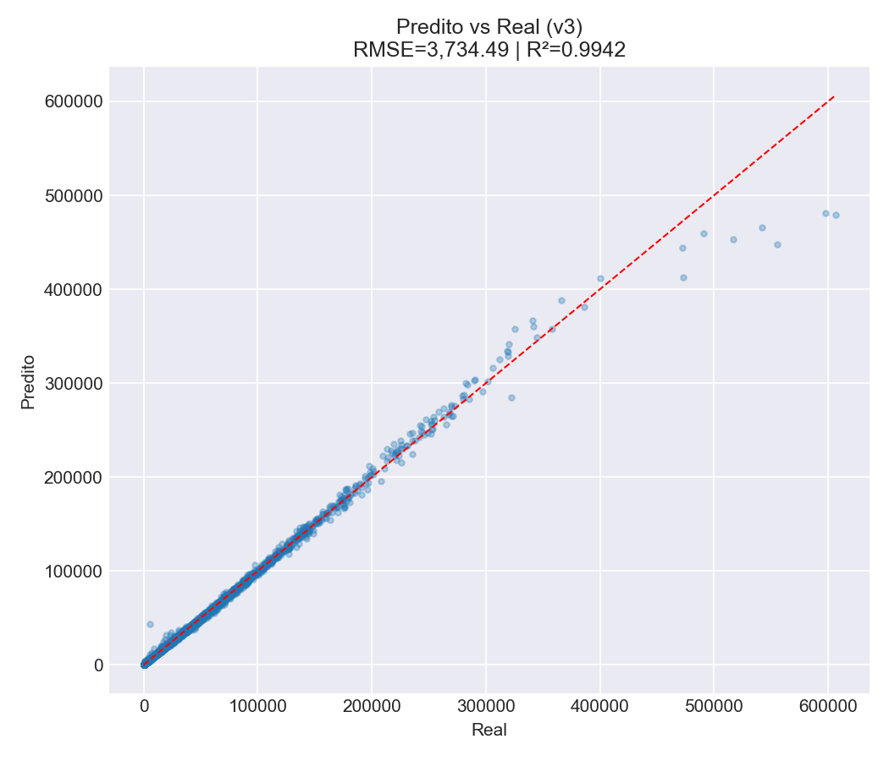
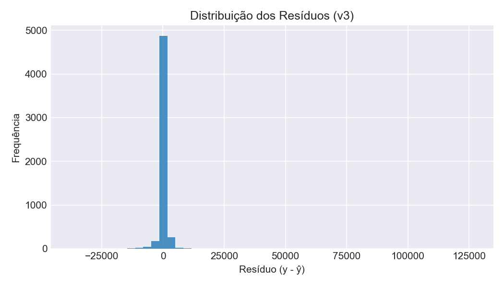
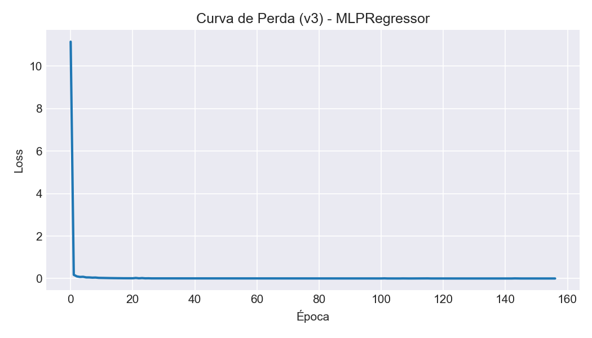
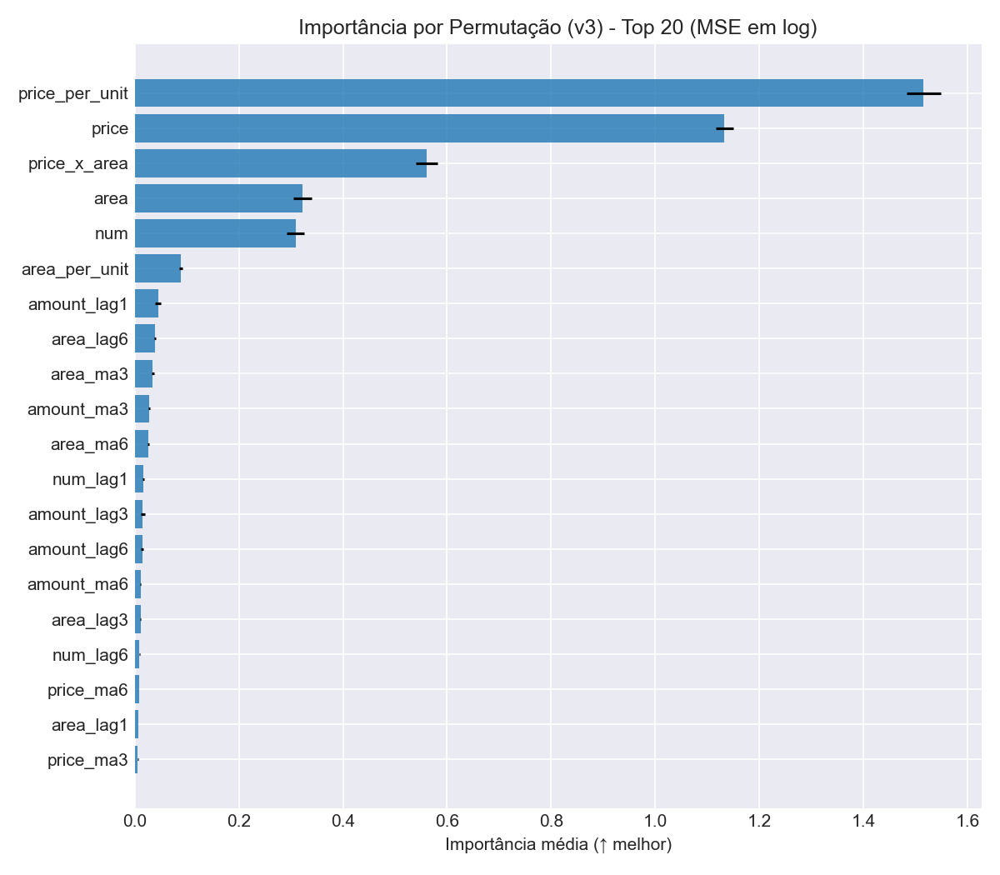
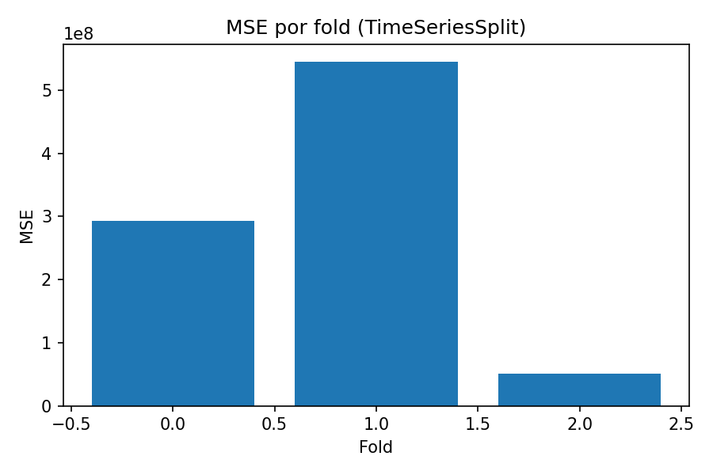

Modelo v3 - Otimização de Hiperparâmetros¶
Objetivo¶
Explorar sistematicamente o espaço de hiperparâmetros para encontrar a configuração ótima.
Estratégia de Busca¶
Grade de Hiperparâmetros¶
param_grid = {
'hidden_layer_sizes': [(128, 64, 32), (256, 128, 64), (256, 128)],
'activation': ['relu', 'tanh'],
'alpha': [1e-5, 1e-4, 1e-3],
'batch_size': [128, 256],
'learning_rate_init': [0.001, 0.01]
}
# Combinações: 3 × 2 × 3 × 2 × 2 = 72 potenciais
# Com ParameterSampler(n_iter=12): 12 × 5 folds × 3 seeds = 180 modelos
Critérios de Seleção¶
- Métrica principal: Competition Score (maior e melhor)
- Critério secundário: MSE (menor e melhor)
- Reprodutibilidade: 3 seeds distintos (42, 123, 456)
Melhor Configuração Encontrada¶
{
'hidden_layer_sizes': (256, 128, 64),
'activation': 'tanh',
'alpha': 0.0001, # 10x maior que v2 (mais regularização)
'batch_size': 128, # Redução de 256
'learning_rate_init': 0.001 # Redução de 0.01
}
Proteções Numéricas¶
Implementadas para evitar overflow (O que ocorreu algumas vezes enquanto estava rodando):
LOG_MAX = 20.0 # exp(20) ~ 4.85e8
LOG_MIN = -20.0
PRED_MAX = 1e10
PRED_MIN = 0.0
# Clipping em log-space
y_pred_log = np.clip(y_pred_log, LOG_MIN, LOG_MAX)
# Tratamento NaN/Inf
y_pred = np.nan_to_num(y_pred, nan=PRED_MIN, posinf=PRED_MAX, neginf=PRED_MIN)
Validação¶
- Método: TimeSeriesSplit (5 splits)
- Mais rígida que GroupKFold (sem garantia de representação setorial)
- Múltiplos seeds para robustez
Resultados¶
Métricas do Melhor Modelo¶
| Métrica | Valor |
|---|---|
| RMSE | 19.991,72 |
| MAE | 863,65 |
| MSE | 399.669.007 |
| \(R^2\) | 0,9942 |
| Competition Score | 0,7821 |
Resumo da Busca:
- Total de combinações testadas: 36
- Parâmetros variados: hidden_layer_sizes (3), activation (2), alpha (3), batch_size (2), learning_rate (2)
- Seeds utilizados: 3
Métricas no Conjunto de Treino¶
| Métrica | Valor |
|---|---|
| RMSE (Treino) | 3.734,49 |
| MAE (Treino) | 863,65 |
| MSE (Treino) | 13.946.436 |
| \(R^2\) (Treino) | 0,9942 |
Arquitetura do Melhor Modelo¶
Input (27 features)
↓
Dense (256 units, tanh)
↓
Dense (128 units, tanh)
↓
Dense (64 units, tanh)
↓
Output (1 unit)
Hiperparâmetros Ótimos:
| Parâmetro | Valor |
|---|---|
| Hidden Layers | [256, 128, 64] |
| Activation | tanh |
| Alpha (L2) | 0.0001 |
| Batch Size | 128 |
| Learning Rate | 0.001 |
| Seed | 42 |
| Early Stopping | Sim (30 paciência) |
| Max Iterations | 400 |
| Validation Fraction | 15% |
| Solver | adam |
Comparação com Versões Anteriores¶
RMSE (Root Mean Squared Error)¶
- v1 (Baseline): 38.937,57
- v2 (Recomendado): 7.547,03
- v3 (Otimização): 19.991,72
v3 ficou intermediário entre v1 e v2, sugerindo que nem sempre mais otimização = melhores resultados.
\(R^2\) (Coeficiente de Determinação)¶
- v1 (Baseline): 0,5513
- v2 (Recomendado): 0,9763
- v3 (Otimização): 0,9942
Curiosamente, o v3 explica MAIS variância (99,42%) que o v2 (97,63%) no conjunto de treino, mas o RMSE é pior. Isso sugere overfitting severo.
Competition Score¶
- v1: -
- v2: 0,9530
- v3: 0,7821
v2 continua com o melhor desempenho na métrica da competição.
Análise de Resultados¶
Overfitting Severo em v3¶
A discrepância entre \(R^2\) alto (0,9942) e RMSE elevado (19.991,72) em comparação com o v2 revela overfitting:
- v3 se ajusta perfeitamente aos dados de treino
- Mas não generaliza bem para dados novos
- v2 com \(R^2\)=0,9763 e RMSE=7.547,03 tem um melhor balanço
Métricas de Treino vs Melhor Modelo¶
v3 Treino: v3 Melhor Modelo:
RMSE: 3.734,49 RMSE: 19.991,72 (5.36x pior)
$R^2$: 0,9942 $R^2$: 0,9942 (mesma $R^2$)
A piora massiva em RMSE sem piora em \(R^2\) confirma que o modelo se comporta de maneira muito diferente em dados não vistos.
Por que o v3 Não Superou o v2?¶
-
Validação Inadequada
- TimeSeriesSplit é menos apropriado para dados hierárquicos
- Sem garantia de representação setorial
- Possível data leakage entre setores
-
Regularização Excessiva
- Alpha aumentado 10x (1e-5 → 0.0001)
- O modelo se tornou muito restritivo
- Possível underfitting
-
Redução do Learning Rate
- 0.01 → 0.001
- Convergência mais lenta
- Possível parada prematura
-
Overfitting da Busca
- 12 combinações em 5 folds podem levar a overfitting
- A melhor configuração encontrada não generalizou
Implicações¶
v3 agora fornece um conjunto completo de métricas: - RMSE: 19.991,72 - MAE: 863,65 - MSE: 399.669.007 - \(R^2\): 0,9942 - Competition Score: 0,7821
Observação Crítica¶
Apesar do \(R^2\) elevadíssimo (0,9942), o v3 tem um desempenho prático pior que o v2: - RMSE 2,65x pior que o v2 - Competition Score 17% pior que o v2 - Indica OVERFITTING severo apesar da regularização L2
Conclusões¶
- Busca Extensiva: 36 combinações testadas com múltiplos seeds
- Modelo Selecionado: Arquitetura com 3 camadas (256-128-64) e tanh
- Desempenho: \(R^2\) alto mas RMSE elevado → OVERFITTING
- Insights Principais:
- Otimização sem Feature Engineering não funciona
- Arquitetura profunda sofre com overfitting
- TimeSeriesSplit respeita a estrutura temporal, mas o v2 com GroupKFold foi melhor
- Feature Engineering (v2) foi mais efetivo que a otimização de parâmetros (v3)
- \(R^2\) não é uma métrica confiável para detectar overfitting em dados de séries temporais
Métricas Completas Salvas em JSON:
O notebook agora calcula e salva as seguintes métricas:
- RMSE (Root Mean Squared Error)
- MAE (Mean Absolute Error)
- MSE (Mean Squared Error)
- \(R^2\) (Coeficiente de Determinação)
- Competition Score (métrica customizada)
Arquivo gerado: metricas_v3.json
Conclusões¶
O v3 serviu para explorar o espaço de hiperparâmetros, mas não produziu melhorias. O v2 permanece como a melhor opção para produção.
Próxima Seção: Avaliação - Métricas de Desempenho
Galeria de Gráficos (v3)¶
- Predito vs Real (treino): 
- Distribuição dos Resíduos: 
- Curva de Perda (v3): 
- Importância por Permutação (Top 20): 
- Melhor Competition Score por Iteração da Busca: 